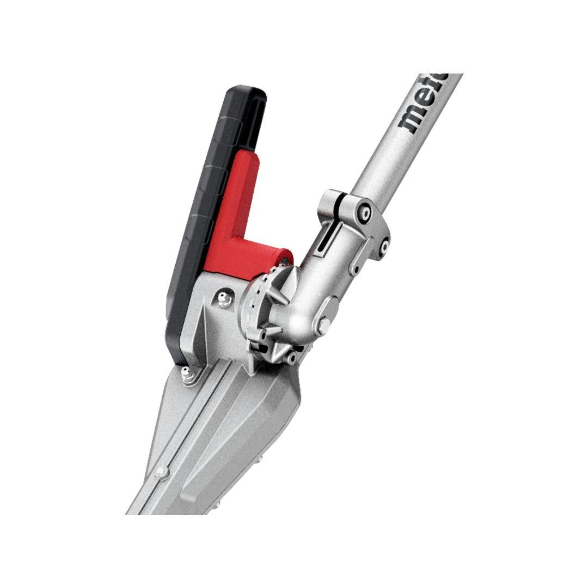
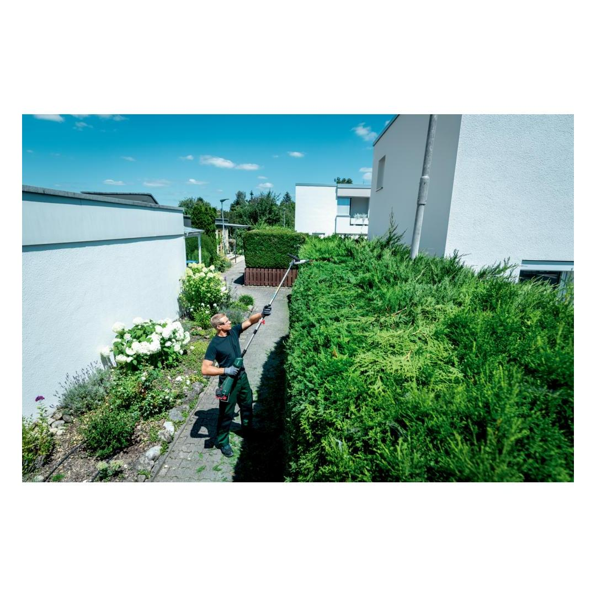
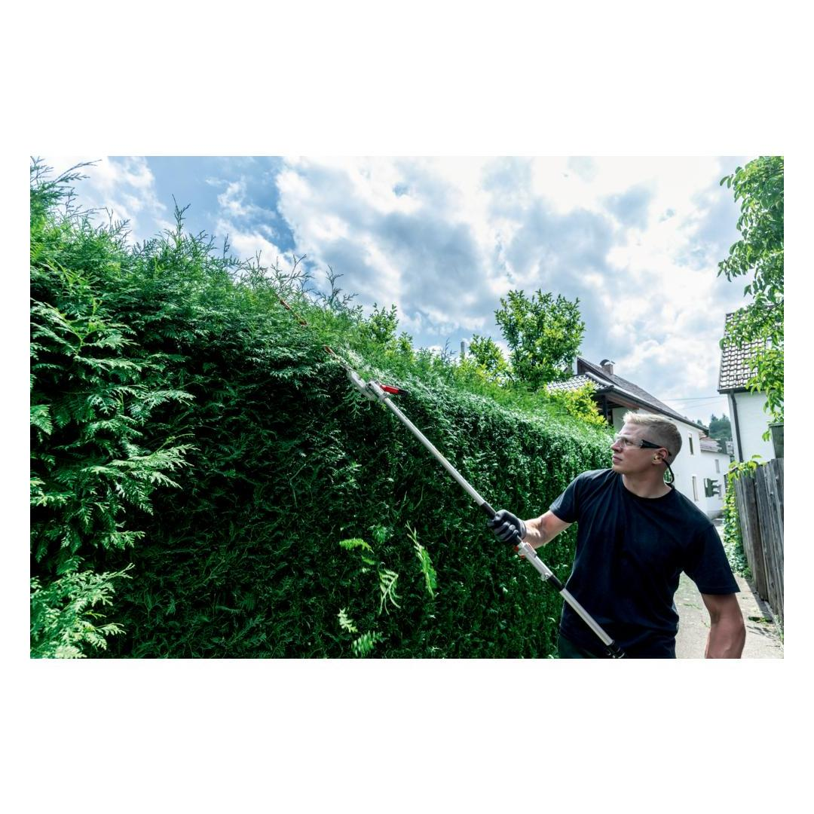
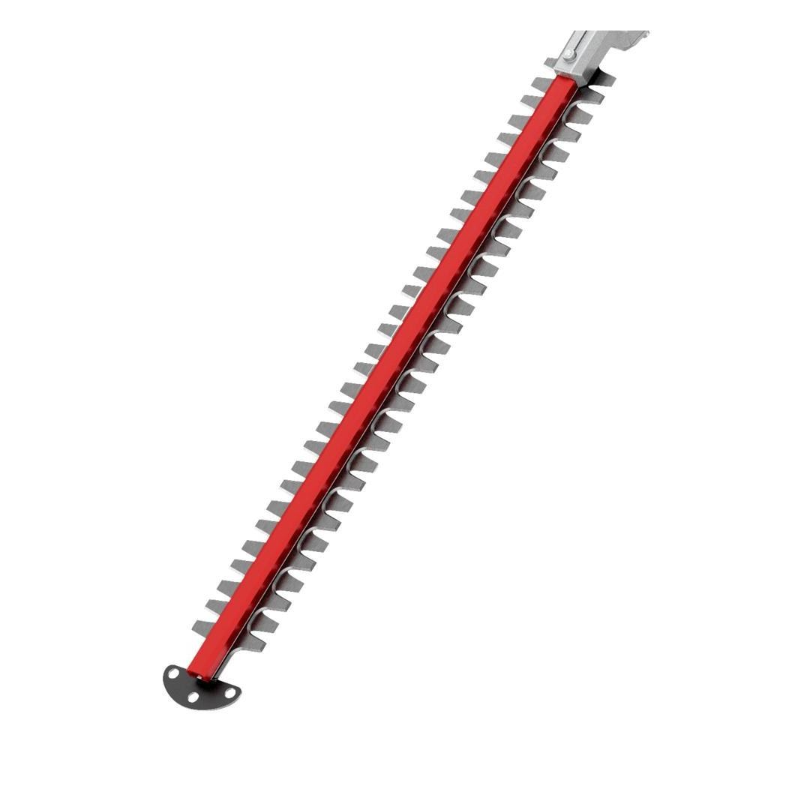
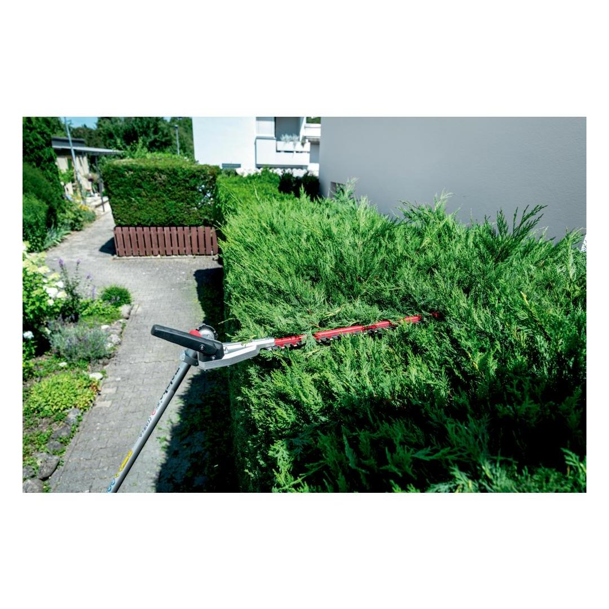
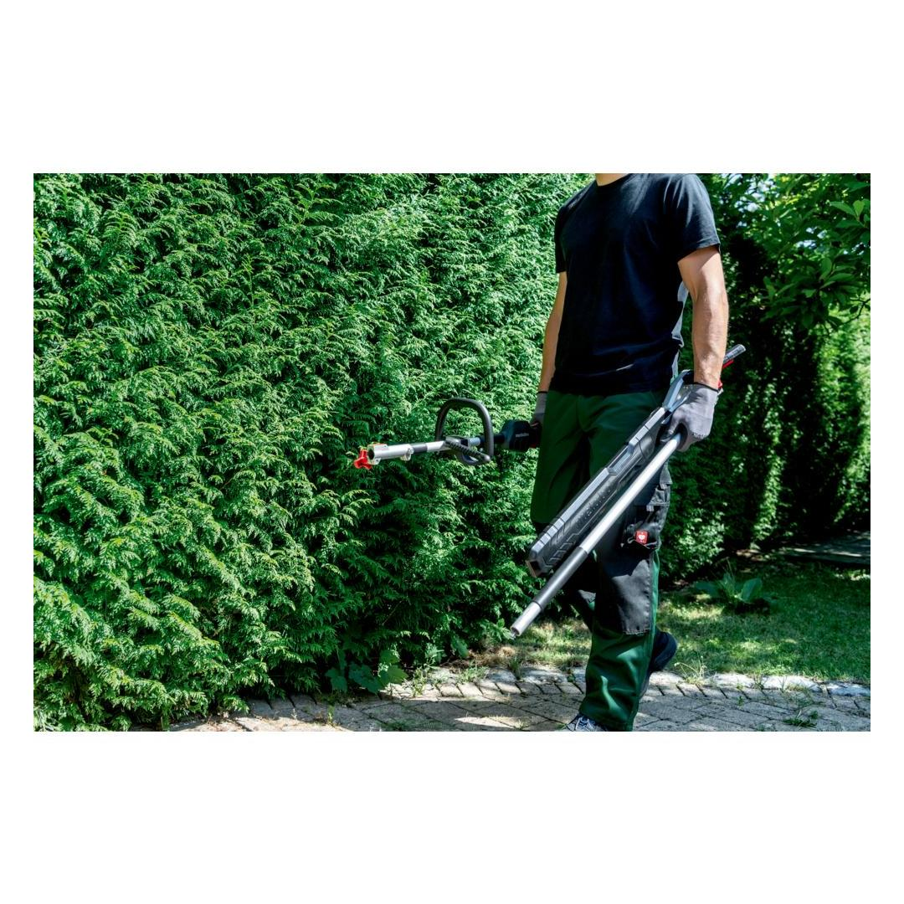
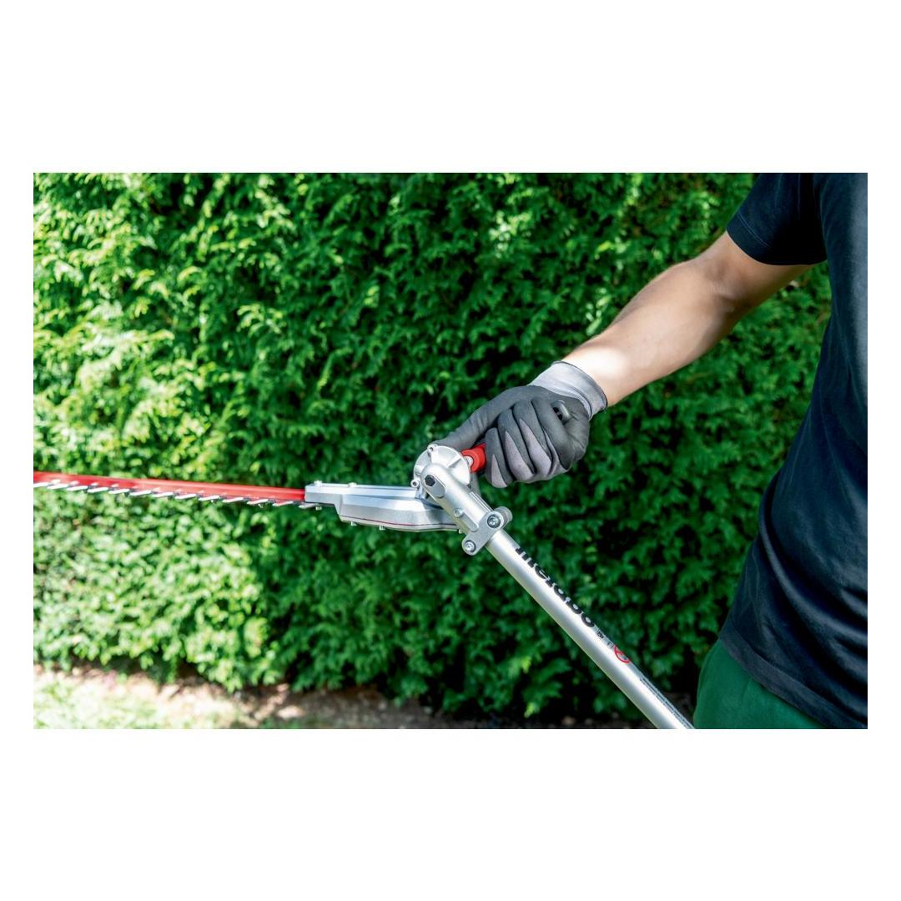
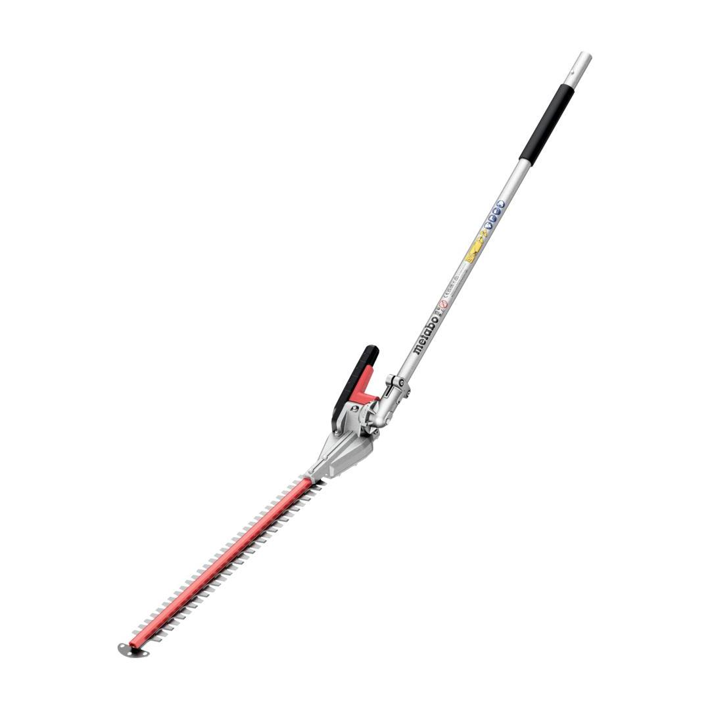

Metabo | Hedge trimmer attachment
601726850














| Cutting length | 48 cm / 18 29/32 " |
| Max. cutting thickness | 22 mm / 7/8 " |
| Number of strokes (No Load) | 0 - 2600 / 0 - 3100 rpm |
| Weight | 2.8 kg / 6.2 lbs |
Product Description
- Cutting of high hedges and shrubs with the hedge trimmer attachment of the Metabo multifunction system, the all-in-one solution for many garden applications
- Together with the cordless multifunction drive MA 36-18 LTX BL Q an environmentally-friendly, quiet system, ideal for areas sensitive to noise
- Metabo "Quick" quick coupling system for tool-free attachment replacement
- Highly efficient, precise dual cutting system thanks to diamond-ground blade teeth on both sides
- Cutter bars can be swivelled by 215° in 13 steps without tools for the optimal angle depending on the working situation
- Trigger guard protects user and gearing when working near walls and the ground
- Robust use thanks to durable metal gear unit
- Easy transport and space-saving storage with folded cutter bar
Product Highlights
Metabo "Quick" quick tool change
without key - quick, comfortable and safe
Technical Details
KEY FIGURES| Blade length | 50 cm / 19 11/16 " |
| Cutting length | 48 cm / 18 29/32 " |
| Max. cutting thickness | 22 mm / 7/8 " |
| Cutting angle | 0 - 215 ° |
| Number of strokes (No Load) | 0 - 2600 / 0 - 3100 rpm |
| Length | 1645 mm / 64 3/4 " |
| Length with drive | 2620 mm / 103 5/32 " |
| Weight | 2.8 kg / 6.2 lbs |
VIBRATION| Vibration | 3.5 m/s² |
| Uncertainty of measurement K | 1.5 m/s² |
NOISE EMISSION| Sound pressure level | 91 dB(A) |
| Sound power level (LwA) | 103 dB(A) |
| Uncertainty of measurement K | 1.2 dB(A) |
Scope of delivery